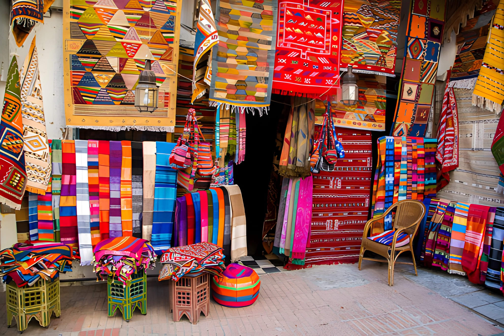
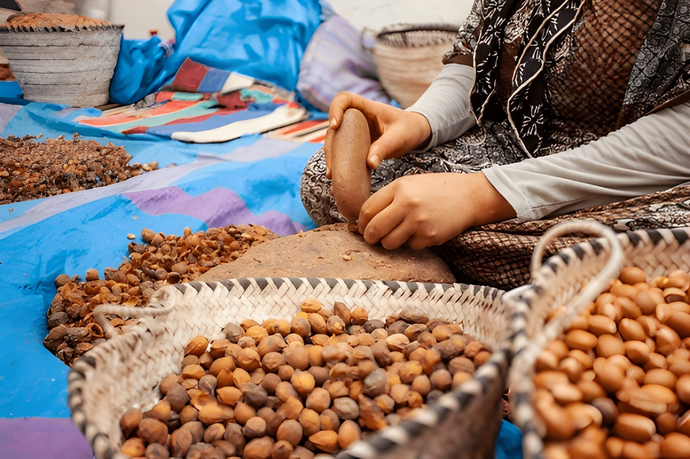
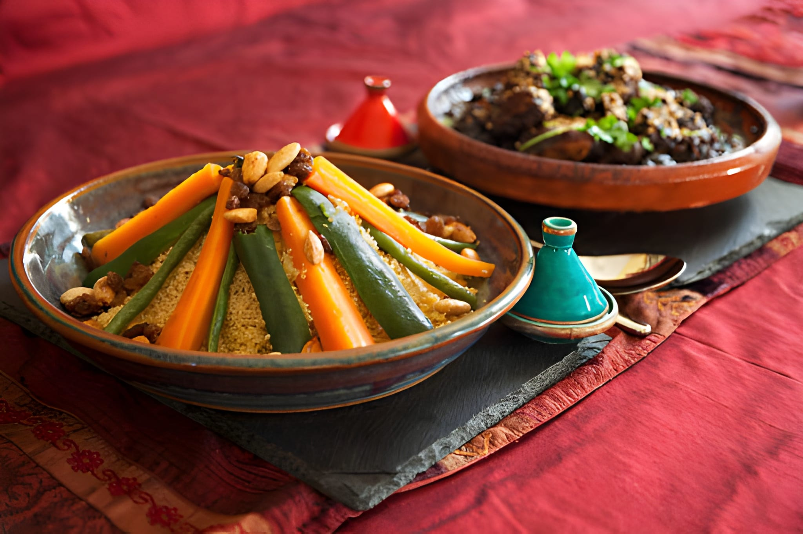

Introduction – More Than a Beach City
Most visitors to Agadir never venture beyond the corniche and resort hotels. But just 15 minutes inland from the beach, an entire world of authentic Moroccan life unfolds every morning. This isn't the Morocco in postcards—this is the living, breathing pulse of the city, where traditions stretch back generations and every interaction tells a story.
From the first sip of mint tea at dawn to exploring the labyrinthine alleys of Souk El Had, Morocco's largest covered market, this journey takes you into the heart of Agadir's local culture. You'll discover that behind every spice blend, every drop of Argan oil, and every handwoven Berber carpet lies a story of family heritage, community spirit, and timeless craftsmanship.

Stop 1: Mint Tea & Sunrise at a Local Café
The morning begins before most tourists wake up. At 6:30 AM, local cafés come alive with the gentle clinking of tea glasses and the murmurs of morning conversations. This is when Agadir truly belongs to its locals—before the tour buses arrive, before the beach fills up.
Walking into a neighborhood café away from the tourist zone, you're immediately enveloped by the aroma of fresh mint and the warmth of Moroccan hospitality. The ritual of tea preparation is almost ceremonial here—gunpowder green tea, fresh mint leaves, and sugar cubes all combined with practiced precision. As you sip your first glass of the day, you watch the sun rise over the High Atlas Mountains in the distance, casting golden light across the city.
Where to Go: Local Cafés Off the Tourist Trail
Skip the tourist cafés on the corniche. Instead, head to the neighborhoods behind Mohammed V Avenue where locals gather. Here you'll find authentic experiences:
- Al Kasbah Café: Rustic atmosphere, morning views of the old Kasbah ruins
- Café Central Souk: Located near Souk El Had entrance, perfect pre-market energy
- Neighborhood Coffee Shops: Ask your guide—the best spots are known only to locals
The etiquette is simple: respect the morning quiet, drink slowly, and if offered a seat with locals, accept it. This is where friendships begin and cultural bridges are built—one glass of tea at a time.
Stop 2: Exploring Souk El Had Like a Local
By 8 AM, Souk El Had is already in full swing. With over 6,000 vendors spread across this massive covered market, it's easy to feel overwhelmed. But with a local guide, every alley becomes an adventure and every stall a story waiting to be told.
Navigating the Maze: A Local's Guide
Enter through Gate 10 (Bab Jedid) and you'll immediately encounter the spice section—mountains of saffron, cumin, paprika, and the legendary ras el hanout (a complex blend of 30+ spices). The aromas are intoxicating, and vendors love explaining their blends to interested visitors.
Continue into the produce section where local farmers sell fruits and vegetables daily. Then follow the sounds of hammering metal to the handicrafts section where you'll find traditional Berber jewelry, leatherwork, and handwoven carpets.
Bargaining Like a Local: Essential Tips
Bargaining at Souk El Had is expected and part of the cultural experience. Here's how to do it respectfully:
- Start at 50-60% of the asking price and negotiate from there
- Stay friendly and smile—bargaining is a social art, not a confrontation
- Know fair prices: Ask your local guide what items should cost before shopping
- Bundle purchases: Buying multiple items gets better deals
- Walk away if needed: Sometimes the best price comes when you're leaving
- Remember: The final price should benefit both you and the vendor—it's a win-win, not exploitation
Safety Tips for Souk El Had
Souk El Had is generally safe, but like any large market, it pays to be smart:
- Keep your wallet in a secure place (front pocket or money belt)
- Don't carry large amounts of cash—most stalls accept small bills
- Stay close to your guide in crowded areas
- Beware of pickpockets in the busiest sections (especially gate areas)
- Keep your phone secure—crowded markets attract opportunists
Best Souvenirs to Buy
At Souk El Had, you can find authentic souvenirs that support local artisans:
- Argan oil: Purchase from certified cooperatives (more on this below)
- Berber carpets: Handwoven rugs with traditional patterns
- Ceramics: Tagines and traditional pottery
- Leather goods: Handcrafted bags and shoes
- Spices: The famous ras el hanout, saffron, and cumin
- Metalwork: Brass and copper lanterns
- Jewelry: Traditional Berber silver pieces
Stop 3: Inside an Argan Oil Cooperative
No morning in Agadir is complete without understanding the sacred process of Argan oil production. This liquid gold, exclusive to southwestern Morocco, requires a labor-intensive traditional method passed down through generations—primarily by women.
We visit a local women's cooperative where the entire Argan oil process unfolds before you. It's not just shopping—it's witnessing a living tradition, supporting women's economic empowerment, and connecting with centuries of Berber heritage.
The Traditional Process: From Tree to Bottle
Argan oil production is a painstaking process that involves:
- Harvesting: Women gather Argan nuts from the thorny Argan trees
- Cracking: The hard nuts are carefully cracked between two stones—a skill that takes years to master
- Roasting: For culinary oil, the kernels are lightly roasted over fires (cosmetic oil remains raw)
- Grinding: The roasted kernels are ground by hand using traditional stone mills
- Pressing: The paste is cold-pressed to extract pure Argan oil
- Filtering: The oil is filtered through natural materials to ensure purity
What makes this remarkable is that throughout history, Argan oil production has been exclusively women's work—a tradition that provides economic independence for rural and urban women across the region.
Supporting Women's Cooperatives
When you purchase Argan oil from a women's cooperative, your money directly supports:
- Women's financial independence and security
- Education funding for children in cooperative families
- Preservation of traditional Berber craftsmanship
- Sustainable Argan forest conservation
- Community healthcare and infrastructure
What to Look for When Buying Argan Oil
With so many vendors selling Argan oil, authenticity matters:
- Buy from cooperatives: Women-run cooperatives ensure authenticity and fair trade
- Check color: Pure culinary Argan oil is golden-amber; cosmetic oil is pale yellow
- Smell test: Should have a nutty, lightly roasted aroma (for culinary oil)
- Certification: Look for "Cooperative" stamps and packaging
- Price guide: If it's too cheap, it's likely cut with other oils—pure Argan oil costs 30-50 euros per liter
Stop 4: Lunch with Locals – Tagine and Tea
Around noon, after hours of market exploration, a local family opens their home for traditional lunch. This isn't a restaurant experience—this is authentic Moroccan hospitality in its purest form.
You'll be welcomed into a traditional house in the Kasbah district where a multi-course lunch awaits. The star of the meal is inevitably the tagine—a slow-cooked stew with tender meat, vegetables, and aromatic spices, served with fresh bread. Accompanying dishes might include spicy Moroccan salads (zaalouk, taktouka), fresh olives, and of course, more mint tea.
The Art of Moroccan Hospitality
Lunch with a local family reveals the heart of Moroccan culture:
- Hospitality is sacred: Guests are treated like family, regardless of background
- Food is love: Expect to be served multiple times—declining is not easily accepted
- Stories are shared: Over tea, hosts share family histories and cultural knowledge
- Memories are made: These lunches create connections that last beyond the tour
By the end of lunch, you're no longer a tourist passing through—you're someone who's experienced the warmth, generosity, and authentic culture that defines Morocco.
Join Our 'Agadir Local Life Experience' Tour
Ready to experience Agadir like never before? Our carefully crafted Agadir Local Life Experience Tour takes you through every stop mentioned in this article, with an expert local guide who ensures authentic interactions and cultural respect.
Experience Real Agadir
From sunrise tea to market exploration and Argan oil cooperatives—discover authentic Moroccan culture with local guides who know the city inside and out.
Book Your Local Experience →What's Included in Your Tour
- ✅ Early morning mint tea experience at a local café with sunrise views
- ✅ Guided exploration of Souk El Had market with bargaining tips and cultural insights
- ✅ Visit to an Argan oil women's cooperative with live demonstration of traditional production
- ✅ Authentic lunch with a local family in the Kasbah district
- ✅ Expert local guide fluent in Arabic, Berber, French, and English
- ✅ Hotel pickup and drop-off in comfortable air-conditioned vehicle
- ✅ Maximum group size of 8 people for an intimate experience
- ✅ Opportunity to purchase authentic souvenirs with local pricing guidance
More Authentic Experiences in Agadir
Your morning of local life is just the beginning. Agadir offers numerous authentic experiences for those willing to explore beyond the beaches:
Related Tours & Experiences
- Moroccan Cooking Class: Learn to make tagines, couscous, and pastries with local chefs
- Paradise Valley Hiking: Escape to natural swimming pools in the Atlas Mountains
- Full Agadir City Tour: Kasbah, souks, museums, and the full authentic experience
- Berber Village Visits: Experience traditional mountain village life with local families
- Traditional Hammam: Experience authentic Moroccan bathhouse rituals
Planning Your Authentic Agadir Experience
Best Time to Visit Markets: Early morning (8-10 AM) offers the most authentic experience before tourist crowds arrive. Vendors are fresh, produce is at its best, and locals are most welcoming.
Duration: Allow 4-6 hours for a complete local life experience including tea, market exploration, cooperative visit, and lunch.
What to Wear: Dress modestly (covered shoulders, knee-length pants/skirts), comfortable walking shoes for market exploration, and bring sun protection and water.
Photography: Always ask permission before photographing people—especially vendors and artisans. Markets allow general photography, but respect private spaces and people.
Frequently Asked Questions
Conclusion: Finding Authenticity Beyond the Beach
Agadir offers so much more than its beautiful coastline. When you step away from the resort hotels and venture into the city's heart, you discover a world of authentic culture, traditional craftsmanship, and genuine hospitality that few tourists ever experience.
From the first sip of mint tea at sunrise to exploring the vibrant chaos of Souk El Had, witnessing the sacred process of Argan oil production, and sharing lunch with a local family—these are the moments that transform a vacation into a journey of cultural connection.
The real Morocco isn't in the hotel lobbies or tourist shops. It's in the morning cafés where neighbors catch up, the market stalls where tradition meets commerce, the cooperatives where women preserve ancient crafts, and the family tables where generosity flows as freely as the tea.
Ready to experience Agadir like a local? Book your Agadir Local Life Experience tour today and discover the Morocco that welcomes you with open arms and genuine warmth. The morning waits, and the adventure begins.